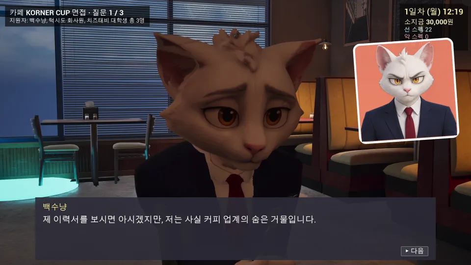
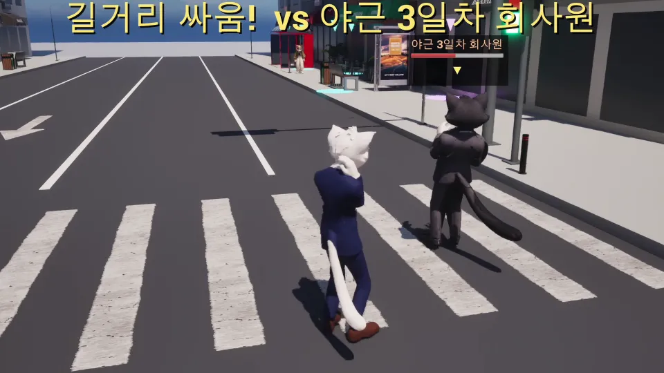

← 게임 목록

실험 09 · 개발 중
서바이브 캣잡
정장 입은 백수 고양이가 취업 면접을 보러 다니는 병맛 액션
개발 중입니다. 하루가 처음부터 끝까지 도는 수직 슬라이스까지 만들었습니다.
- 기간
- 2026.10부터
- 인원
- 1명, 개발 담당
- 플랫폼
- 언리얼 엔진 5.8
- 결과
- 수직 슬라이스
생각해 둔 세계관이 있는가?
소개
대인기피 흰 고양이 백수냥이 공고에 지원해 3인 면접을 보고, 거리에서 시비가 붙으면 싸우고, 하루가 끝나면 일기를 씁니다. 타이틀부터 지원, 면접, 싸움, 일기, 자동 저장까지 하루가 끊기지 않고 돕니다.


더 들은 말
- 팀 회의3개월 과제에 비해 콘텐츠가 많다. 몇 개는 쳐내야 한다.
회고
돌아가는 게임은 만들었지만 해 보니 심심했습니다. 고양이를 전부 사람으로 바꿔 봐도 면접, 싸움, 휴대폰이 그대로였습니다. 고양이를 고른 이유도 리소스가 적게 든다는 개발자 입장이었습니다.
그래서 사람으로 바꾸면 성립하지 않는 것만 넣기로 했습니다. 메인 스토리로 뼈대를 세우고, 영역다툼과 꼬리·귀 언어처럼 고양이 습성을 시스템으로 바꿉니다.
만든 방식
- 조건
- 강유민 1명이 게임가상현실 수업 과제로, 언리얼 엔진 5.8 블루프린트로 약 2주 만에 수직 슬라이스까지 만들었습니다.
- 캐릭터
- 컨셉 그림에서 AI 3D, 리깅을 거쳐 언리얼에 넣는 과정을 만들어 고양이 12명을 넣었습니다. NPC 한 명에 약 2분 걸립니다.
- 지금 분량
- 면접 볼 수 있는 회사 1곳, 휴대폰 앱 3개, 직접 합성한 효과음과 음악 47개입니다.
- AI를 쓴 곳
- 컨셉 그림, 3D 모델, 개발 보조
- 만든 사람
- 강유민